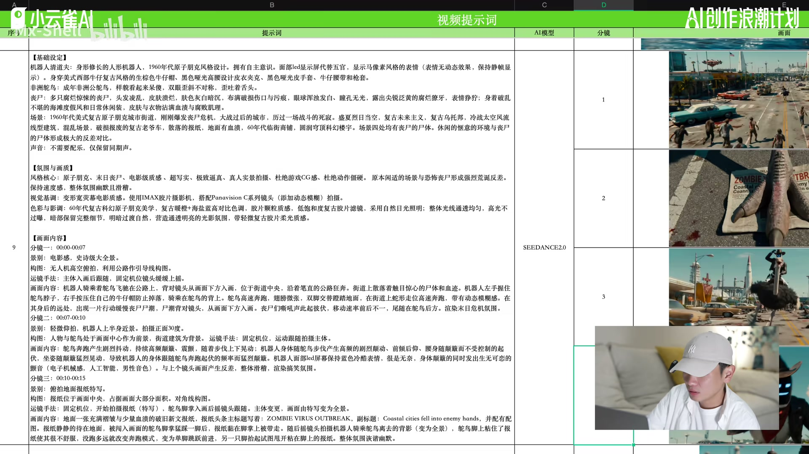
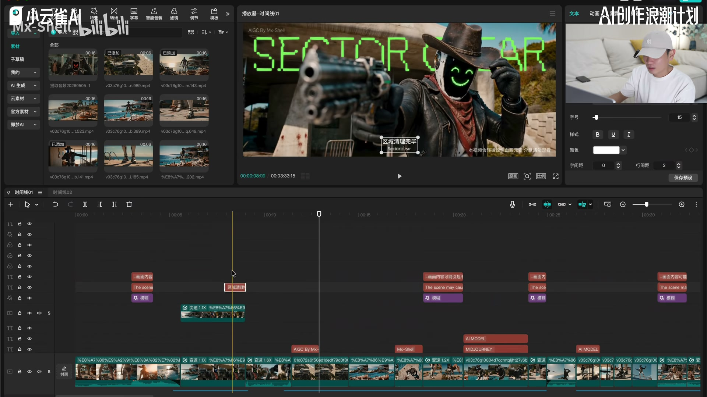
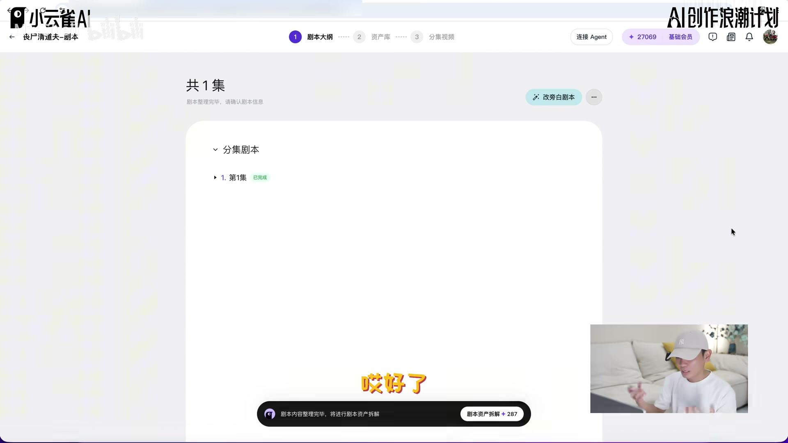
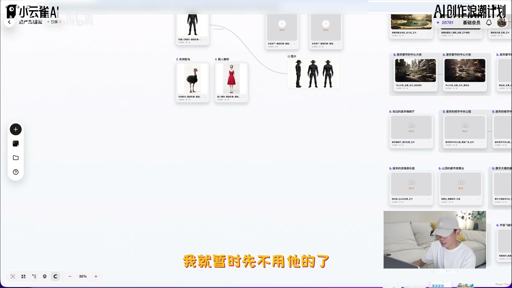
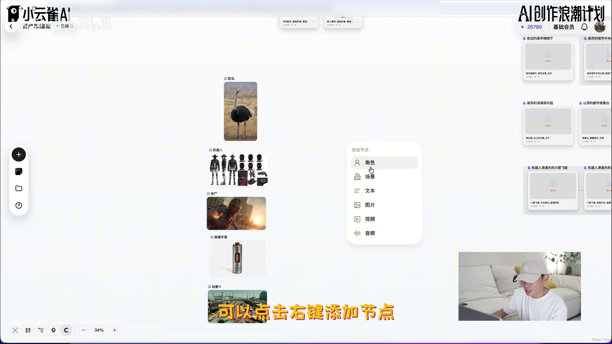
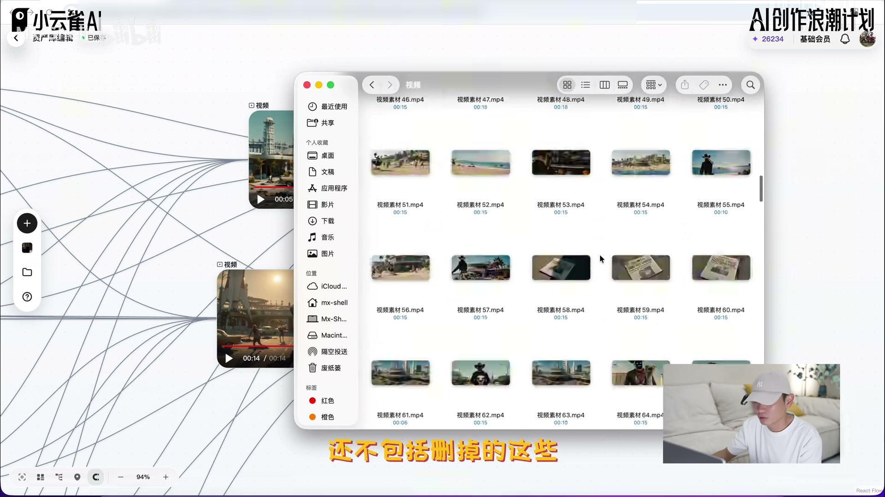
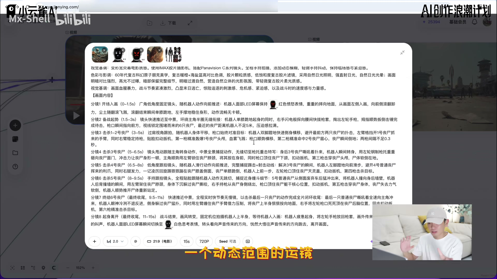
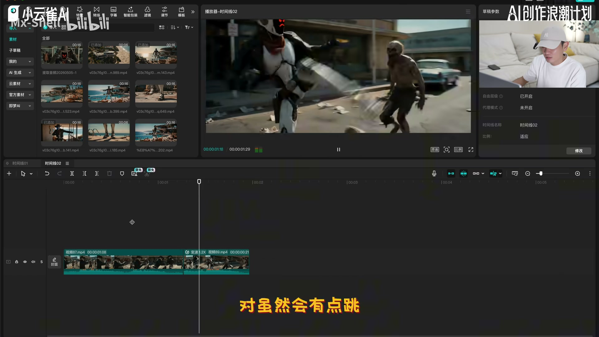
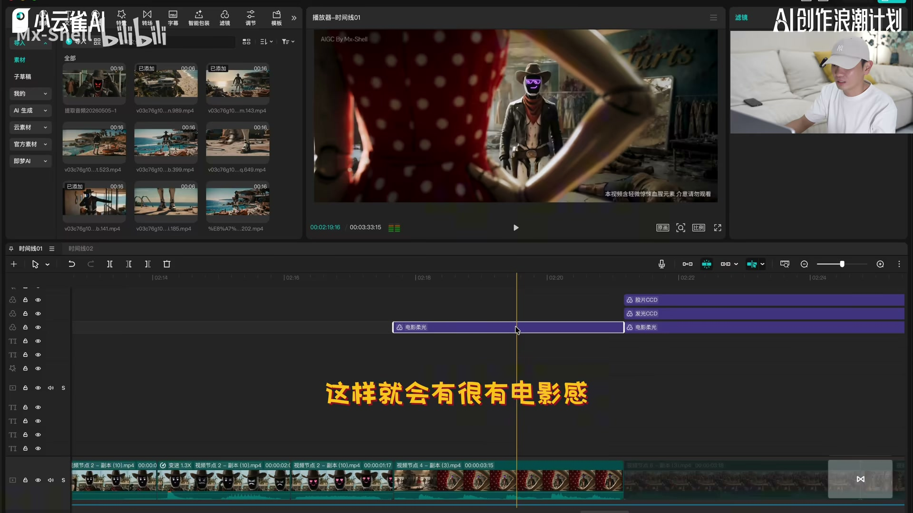

视频解决的问题
如何把一个 AI 视频短片，从提示词、资产与镜头生成，整理成可选、可剪、能保持一致性的创作流程。
这是一份对作者个人实践的结构化复盘，不等同于对任何工具能力或通用效果的外部承诺。
原视频：今天把我关于《丧尸清道夫》的创作思路分享给大家，如果能帮到你，我会很开心。
基于《丧尸清道夫》创作过程，作者从提示词结构、画布资产到多分镜生成与后期衔接，给出一条以影视语言为骨架的个人工作流。
如何把一个 AI 视频短片，从提示词、资产与镜头生成，整理成可选、可剪、能保持一致性的创作流程。
这是一份对作者个人实践的结构化复盘，不等同于对任何工具能力或通用效果的外部承诺。
作者提出，给参考图后还应文字描述关键主体与关系，以帮助锁定生成结果的一致性。
基础设定、氛围与画质、画面内容。先把“是什么”，再把“像什么”，最后把“怎么发生”。
动作、动机、预期效果连起来，让模型理解行为为何发生，而非堆叠命令。
景别、构图、运镜、色彩与影调，是提示词之外更能提升判断力的基础。
剧本可拆出角色、道具、场景；缺失资产再自行补充或上传，避免带着未知缺口生成。
作者的演示把多次生成视为素材池；先保留可用段，再借后期完成节奏与连接。
高速动作可限制阶段、景别、运镜，却不必把构图完全框死，给模型留出发挥空间。
动作方向、镜头运动、光线与色彩的一致性，决定不同生成片段能否被自然拼接。
写明时间、地点、人物；确定风格、质感、情绪和声音限制。
交代分镜、景别、构图、运镜与故事中必须发生的画面信息。
从剧本提取角色、道具、场景；在画布中补齐、连接并设定生成参数。
将可用生成片段下载，靠动作匹配、速度、镜像与调色完成连贯叙事。
常见误区：作者明确提醒，不能假定 AI 会完整理解提示词，也不能把它给出的内容直接当成可用终稿；素材筛选、细化与后期判断仍不可省略。
怎样把一部已完成的 AI 短片拆回可复用的思考过程？视频中认为，应从“为何这样创作”而非只从工具按钮开始。
界定分享边界：提示词 → 小云雀画布 → 后期；再把重点放在可解释的决策。
坑是把作者的个人习惯当作唯一方法。结论：先形成自己的画面判断，再选择工具路径。
复盘一条成片时，先写下三个决定成败的创作判断，而不是只记录参数。
没有整理资产时，如何从剧本文字进入可生成的工作面？作者演示了剧本解析、资产拆解和自由画布两种入口。
把自动拆解当作完整资产清单；以为早期风格选择不可改；忽略缺失资源与最终镜头所需元素。
生成前做一张资产核对表：角色、场景、道具、表情/状态、参考素材。缺失的先标出再补。
多分镜如何既写清动作，又不给高速画面设限？作者提出按阶段交代动作、景别和运镜，并为构图保留适度自由。
完全照搬 AI 给出的分镜；把构图框得过死；把第一次结果当最终片段；忽略表情、动作或时长漂移。
先写“必须保留”的动作和镜头势能，再为构图留出发挥空间；建立候选池，只保留能服务剪辑的段落。
不同生成段如何被剪成同一个故事？作者认为，候选片段之外还需要后期把人物层、文字层和背景层，以及动作和影调的关系重新整理。
让文字遮住人物；只看画面相似而忽略动作势能；忽略光线方向、影子和色温差异。
剪辑前列连续性检查：人物层级、动作方向、镜头方向、光源/影子、色温色调与主体位置。优先用能承接势能的片段。
教程最终要交付一套可复制答案，还是一种能持续创作的判断能力？视频中选择后者。
把模仿得到的技巧，转化为自己的观察、选片、剪辑和叙事判断。
坑是只复制提示词和操作。结论：AI 是创作伙伴；最终成片的取舍仍来自作者的输入与判断。
下一次练习只复用结构，不复用题材：自己设计一段人物动作、镜头目的和后期连接方案。

三层结构的总入口，帮助对应第 2 章的框架。
回看原视频 ↗
作者演示复制人物层、抠像，并把文字置于人物后方；这一帧把后期层级关系落到可见画面。
回看原视频 ↗将风格重点、限制与质感放在同一视觉锚点。
回看原视频 ↗
从文字剧本进入资产分析，是第 3 章的关键切换。
回看原视频 ↗
角色、场景等元素可见地进入画布，解释生成输入关系。
回看原视频 ↗
展示单镜头演示中的连接与组织，而非只展示结果。
回看原视频 ↗
对应作者“多跑再挑”的实际结果，提醒生成不是终稿。
回看原视频 ↗
用于说明阶段、景别和运镜的约束，及给动态镜头留空间。
回看原视频 ↗
对应后期阶段：不同生成段要用动作和镜头方向找到连接点。
回看原视频 ↗
展示作者把一致性与氛围放到后期完成的理由。
回看原视频 ↗关键帧均由已有候选图中按章节内容筛选；未为填充页面按固定间隔新增截图。
这段视频最有价值的不是某一条提示词，而是一个闭环：用影视语言说明意图，按资产与节点组织输入，用多次生成获得可挑选素材，再用剪辑把不连续的片段变成连续的叙事。作者在视频中反复强调，工具可以协助描述与生成，但不应取代创作者的观察和判断。